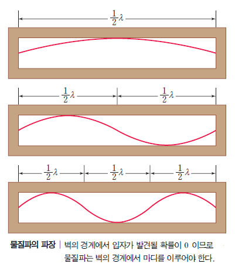

두 가지로 이루어져있다. 시간에 의존하는 슈뢰딩거 방정식과 시간에 의존하지 않는 슈뢰딩거 방정식으로 나뉜다.
시간에 의존하는 슈뢰딩거 방정식: iℏ * ∂𝛹/∂t = -ℏ²/2m * ∂²𝛹/∂x² + V𝛹
시간에 의존하지 않는 슈뢰딩거 방정식: -ℏ²/2m * ∂²𝛹/∂x² + V𝛹=E𝛹
슈뢰딩거 방정식을 1차원 상자에 갇힌 입자에 대입한다면 다음과 같다.

상자 외부에는 퍼텐셜 에너지가 ∞이기 때문에 입자는 상자 바깥으로 갈 수 없다. 이 때, 입자가 가질 수 있는 에너지는 다음과
같다. 슈뢰딩거 방정식에 의하면,
En=n²ℎ²/8mL² (n=1,2,3,...)
En: 입자의 에너지, ℎ: 플랑크 상수, m: 질량, L: 1차원 상자의 길이
위의 식은 에너지가 불연속적이라는 내용도 의미하고 있다. 위의 식은 물질파
(프랑스의 물리학자 드브로이가 주장. 운동량을 가진 물질은 파동의 성질을 가진다.)의 파장을 이용하여 구할 수도 있다.

위 그림은 물질파의 파장이다. 이 때, 입자가 발견될 확률이 제일 많은 곳은 각 파동의 마루와 골이다. 만약 n이 ∞이 된다면,
모든 곳에서 입자가 발견될 확률이 제일 클 것이다.